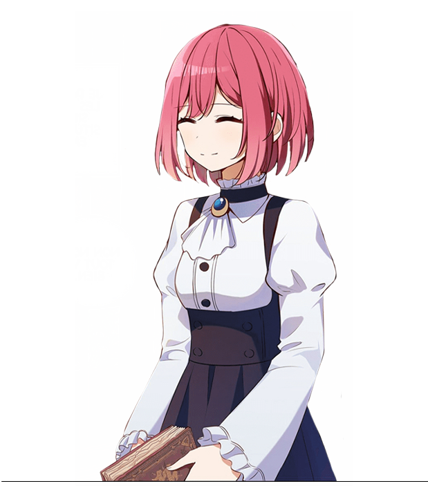
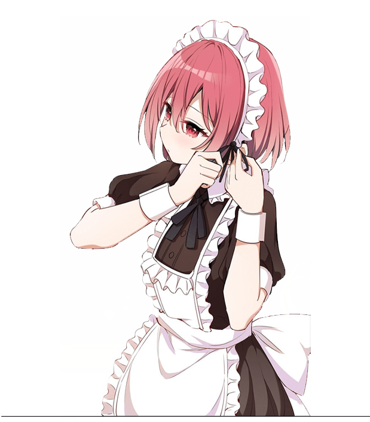

Miyuchan is a free and multipurpose Discord bot with lots of commands. Unlike some, Miyuchan will stay free, forever
She is the all-in-one maid for your discord server with custom configuration and 50+ commands in the domains of Moderation, Levels & profile, Fun & Other, Groups, Economy and Server
Also, Miyuchan's birthday is the 28th of June
Some bots set useful features behind a paywall, Miyuchan was created to counter that including XP-Roles, Economy, Polls, Embed maker, Auto-Replies and more
Miyuchan has a second edition allowing you, user, to have Miyuchan everywhere on discord meaning that you can use the bot on servers even if the servers don't have Miyuchan. This is based on the user-apps feature. The Pocket edition includes Utilities, Games, Economy, Fun & Other and more
